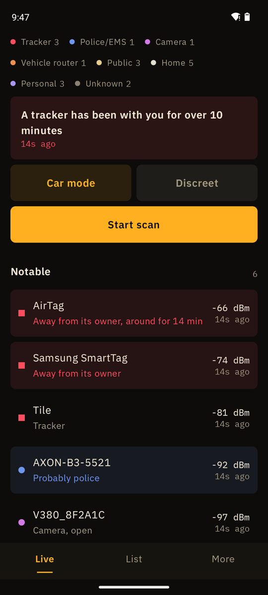

AirTag detector for Android
Warns when a tracker that left its owner stays with you.
Download the APKSource on GitHub
Free, Android 8.0 or newer, runs on GrapheneOS without Google services. No account.

Funkblick is an AirTag detector (Android, no iPhone needed) and a Bluetooth tracker detector. It recognises AirTags and other Find My accessories, Samsung SmartTags, Tile, Chipolo, Pebblebee and tags in Google’s Find My network. It tells a tag next to its owner from one that is on its own, and warns once a separated tag has been with you for ten minutes.
How it tells trackers apart
Apple Find My
Company id 0x004C, message type 0x12. A long key means the tag is away from its owner. Status bits separate AirTag, AirPods and third-party Find My tags.
Samsung SmartTag
Service 0xFD5A. The low bits of the first byte say whether the tag is connected to its phone or offline.
Google Find My
Service 0xFEAA with frame type 0x40 or 0x41. 0x41 is the unwanted-tracking mode a tag enters when it is away from its owner.
Tile, Chipolo, Pebblebee
Service 0xFEED, 0xFE33 and 0xFA25. These do not say whether the owner is near, so Funkblick lists them but does not warn.
What Funkblick can’t do
- No direction. A phone only measures how strong a signal is. The angle on the radar is a fixed spot per device, not a compass.
- Access points only. Android lists Wi-Fi routers and hotspots, not devices that are merely connected. A camera on someone’s home network stays invisible.
- No police radio. Police and EMS talk over TETRA or P25, which no phone can receive. Funkblick only sees the Wi-Fi and Bluetooth of their gear, if it has any.
- Random addresses. Phones and trackers change their Bluetooth address. Funkblick then reads what the device broadcasts instead of guessing the maker.
Questions
Can Android detect AirTags?
Yes. An AirTag away from its owner broadcasts a Find My signal every two seconds. Funkblick works as an AirTag scanner: Android’s normal Bluetooth scan is all it needs.
Find AirTag, Android only: how?
Start the scan, filter the list by Tracker, tap the one marked separated and open Find mode. The number rises and the beep speeds up as you get closer.
When does Funkblick warn?
When a tag that is separated from its owner has been near you for more than ten minutes without a gap of five minutes and, if GPS is on, at three places at least 300 m apart. Tags next to their owner (a friend’s keys) never ring.
Can it make the tracker beep?
No. That needs a Bluetooth connection, which Funkblick never opens. Instead, Find mode shows a big signal meter and beeps faster as you get closer.
What should I do when I find one?
Keep it, it is evidence. If you feel threatened, call the police. In Germany the violence-against-women helpline is 116 016, victim support Weisser Ring 116 006.